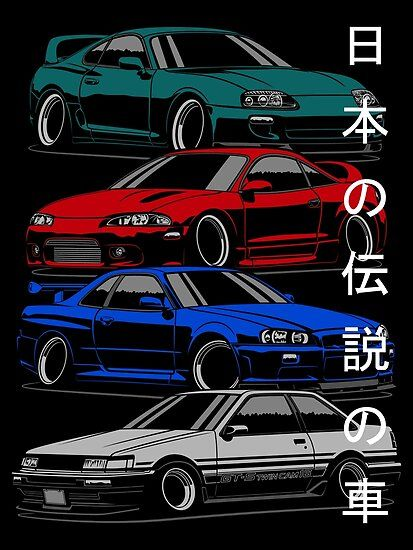

Japanese domestic market (JDM)
¿Que es JDM?
El japanese domestic market (JDM), en español mercado interno japonés, es el término es utilizado por las empresas en Japón para referirse al mercado de bienes locales y servicios nacionales, en comparación con el mercado internacional. Dentro del mundo de la importación del automóvil, este término se refiere generalmente a los automóviles japoneses de la misma marca y piezas diseñadas y fabricadas para ajustarse a los vehículos japoneses y regulaciones de equipamiento, según las preferencias del mercado japonés.
¿Quien imupuso la moda?
Estos mismos constructores aprovecharon la creciente demanda de automóviles deportivos y de alto rendimiento en Japón para crear modelos exclusivos que sólo se comercializaban en ese país. Estos vehículos, conocidos como "JDM sports cars", se convirtieron en símbolos de la cultura automotriz japonesa y fueron populares a lo largo y ancho del planeta.